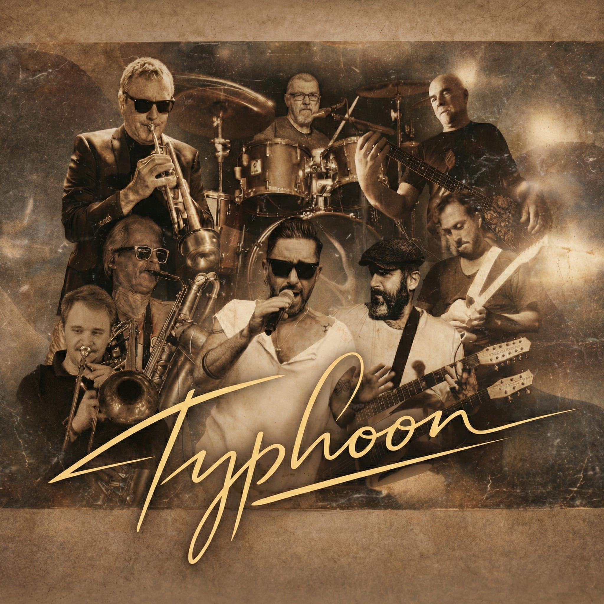

Groove zuerst
Viel Bewegung im Rhythmus, federnde Basslines und Drums mit Druck statt sterilem Geradeauslauf.

Bluesrock • Funk • Soul • Groove
Typhoon ist eine 8-köpfige Band aus Hechingen: Bluesrock mit Funk- und Soul-Touch, kräftigen Gitarrenriffs, Bläsersatz und einem Sound, der direkt nach Bühne riecht.
Die Band
Typhoon verbindet Bluesrock mit Funk- und Soul-Touch. Der Sound lebt von Druck, Luft, Dynamik und einem satten Fundament aus Rhythmusgruppe, Gitarren und Bläsern.
Zwischen schweren Riffs, warmen Hammond-Flächen, treibenden Grooves und einem Hauch Southern-Vibe entsteht ein Livesound, der sowohl kantig als auch tanzbar ist.
Die Band probt regelmäßig im Kanzlei Studio in Hechingen und arbeitet daran, ihr Set weiter zu festigen und wieder mehr Live-Shows zu spielen.
Der Sound
Viel Bewegung im Rhythmus, federnde Basslines und Drums mit Druck statt sterilem Geradeauslauf.
Zwei Gitarren, Hammond-Farbe und genug Schmutz, damit der Sound nicht geschniegelt klingt.
Saxophon, Trompete und Posaune setzen Akzente, treiben Hooks nach vorn und öffnen den Sound nach oben.
Ab und zu schimmert eine staubige, warme Weite durch — genau da, wo Groove auf Straße trifft.
Bandfoto
Songs
Shows
Hinweis: Die folgenden Termine sind Demo-Inhalte für die Website-Gestaltung und keine bestätigten Buchungen.
Vorband
Walddorfhäslach • 19:00 Uhr
Live
Reutlingen • 20:30 Uhr
Festival Slot
Tübingen • 18:00 Uhr
Headline Show
Balingen • 21:00 Uhr
Special Set
Hechingen • 20:00 Uhr
City Stage
Stuttgart • 19:30 Uhr
News
01
Typhoon arbeitet aktuell daran, das Liveset musikalisch und dramaturgisch zu schärfen — mehr Flow, klarere Übergänge und noch mehr Druck auf der Bühne.
02
Im Hechinger Proberaum wird konsequent an Sound, Zusammenspiel und Dynamik gefeilt. Ziel ist ein stabiles Set für kommende Live-Termine.
03
Für die nächsten Monate ist der Fokus klar: Set festigen, Präsenz ausbauen und wieder häufiger in der Region live spielen.